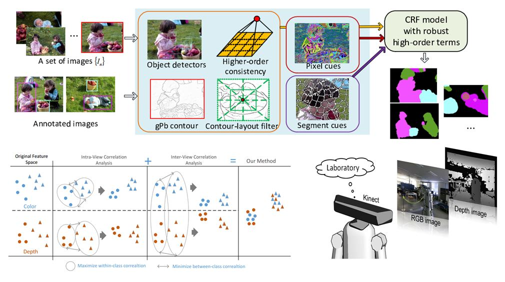

Holistic Scene Parsing with Various Supervision
Introduction:
Scene recognition/object detection is useful for a wide range of tasks.
On the other hand, it requires a huge number of training data. Hence I explore an
interactive system, require a user to label a few object-of-interests using bounding boxes and
then use the weakly supervised information for further object co-detection and segmentation.
This problem is challenging, we leverage various priors to solve this ill-posed problem,
for example object exists in various levels of cues, with distinct colors, texture patterns, and shapes.
Moreover, I observed that although segmentation methods can achieve some impressive result in certain classes,
it typically underperform on things or objects, due to not explicitly capturing the global shape information of the object.
On the other hand, detection methods are geared towards capturing this information but tend to fail on stuff, which is amorphous.
Thus I proposed correlation-based multi-modal fusion methods to fuse multi-modal features and in the meanwhile we also propose a novel
CRF to fuse various level cues from segmentation
and object detectors together under one framework holistically with very good performance.

Paper:
- Hongyuan Zhu, Fanman Meng, Jianfei Cai, Shijian Lu,
"Multiple Human Identification and Cosegmentation: A Human-Oriented CRF Approach with Poselets.",
{IEEE Transactions on Multimedia \textbf{(TMM)} , 2017.
[PDF]
- Hongyuan Zhu, Jiangbo Lu, Jianfei Cai, Jianmin Zheng, Nadia M.Thalmann,
"Multiple Foreground Recognition and Cosegmentation: An Object-Oriented CRF Model with Robust Higher-Order Potentials",
IEEE Winter Conference on Applications of Computer Vision (WACV2014, Student Travel Grant, Oral)
[PDF]
[Code]
- Hongyuan Zhu, Jiangbo Lu, Jianfei Cai, Jianmin Zheng, Nadia M.Thalmann,
"Poselet-based multiple human identification and cosegmentation",
IEEE International Conference on Image Processing (ICIP2014, Student Travel Grant, Top-10% paper award)
[PDF]
[Code]
- Hongyuan Zhu, Jean-Baptiste Weibel, Shijian Lu
"Discriminative Multi-modal Feature Fusion for RGBD Indoor Scene Recognition",
{IEEE Conference on Computer Vision and Pattern Recognition (CVPR2016)
[PDF]
[Code]
Related Works:
- Xi Peng, Joey Tianyi Zhou, Hongyuan Zhu, "k-meansNet: When k-means Meets Differentiable Programming",
in arXiv: 1808.07292, 2018. [PDF]
- Hongyuan Zhu, Jianfei Cai, Jianmin Zheng, Nadia M.Thalmann,
"Salient Object Cutout using Google Images",
IEEE International Symposium on Circuits and Systems (ISCAS2013, Oral)
[PDF]
[Code]
- Hongyuan Zhu, Jianmin Zheng, Jianfei Cai, Nadia M.Thalmann,
"Beyond pixels: a comprehensive survey from bottom-up to semantic image segmentation and cosegmentation." (Invited Survey),
{Elsevier Journal of Visual Communications and Image Representation (JVCI, Invited Survey)} , 2013.
[PDF]